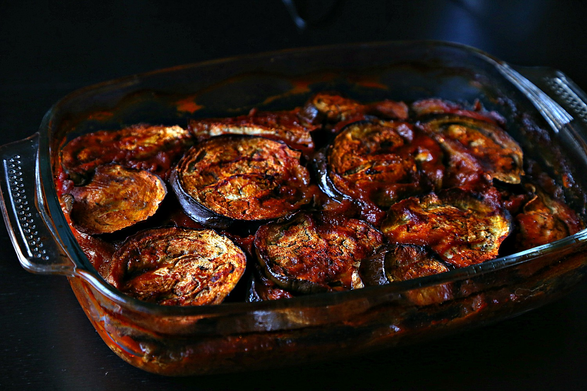

Moussaka
For Eggplant Addicts

A prepared Moussaka dish showing cooked eggplants and tomatoe sauce in a
casserole coming out of the oven.
(Credit for the recipe.)
What is Moussaka?
Moussaka is an eggplant - or cauliflower-based dish, often including
ground meat, which is common in the Balkans and the Middle East, with many
local and regional variations. We will make one of the Middle Eastern
versions which uses eggplants, tomatoes, and ground beef.
Moussaka can be healthy as long as you don't deepfry the eggplants, which
is typically how they are prepared for the dish and is the most delicious
what to do it.
Ingredients
- 1 tsp sunflower oil
- 1 Tb pomegranate molasses
- 400g ground lamb meat
- 1 big eggplant
- 4 Tb tomato paste
- 1 tsp of seven-spice mix
- 2 cups of water
- 1 small onion minced
- 1 big tomato sliced
- 2 Tb tomato paste
Steps
- Heat the oven at 180 C.
-
In a sheet pan, put the eggplant slices, and brush them with little
olive oil or add 1-2 tsp of olive oil.
-
Mean while, heat a skillet on a medium heat and add 1 tsp of sunflower
oil, then saute an onion for 3 minutes.
-
When the onion becomes translucent, add the meat, 1 tsp 7 spice, salt
and pepper, and pomegranate molasses.
-
When the meat is no longer pink, add 4 Tb tomato paste, and mix them
well, and season again.
- Check the eggplant and after 10-15 minutes and flip them once.
-
In a oven safe dish, add the eggplant at the bottom of the dish. then a
layer of meat.
-
Add a layer of slice fresh tomato, then again another layer of meat, and
finish it with a layer of eggplant.
-
Add a mix of water, tomato paste, and spices to cover the whole dish,
you can use stock instead of water.
-
Keep it in the oven until the liquid is reduced to half. around 25
minutes
- Serve with white rice or pita bread.
- Refrigerate any leftovers.